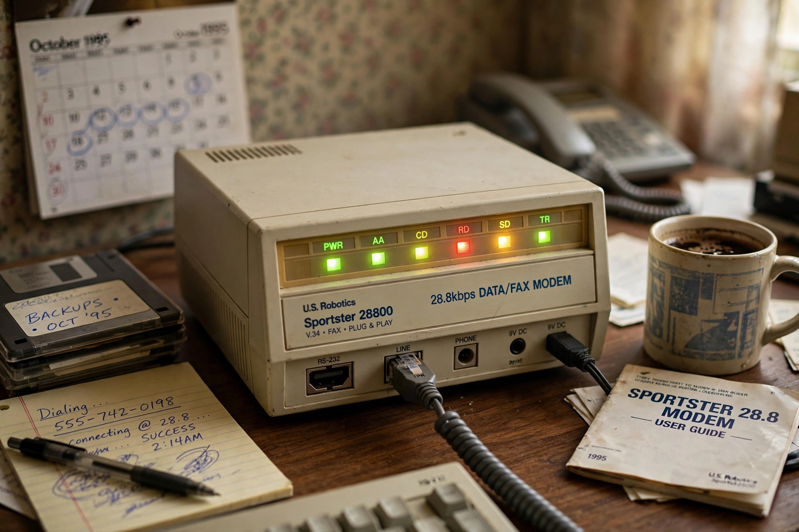

Modem

Photograph of a 1990s external dial-up modem with status lights
A modem (from modulator–demodulator) is a hardware device that converts data from a digital format into a format suitable for an analog transmission medium, such as telephone lines or radio, and converts incoming analog signals back again. Modems let computers communicate over infrastructure that was never designed for data.
The classic dial-up modem modulated data into audio tones within the voice band of a telephone call. Speeds climbed from 300 bit/s in the 1960s to the 56 kbit/s of the 1990s home Internet era, accompanied by the famous screeching handshake as two modems negotiated. Voiceband modems gave way to broadband technologies that use far wider frequency ranges on the same wires — DSL — or on cable television networks (cable modems), and to fibre terminals (ONTs) that perform the analogous conversion for light. Cellular modems and the modem functions inside every smartphone apply the same principle to radio. The word survives in 'cable modem' and settings menus long after pure analog modulation became a niche.